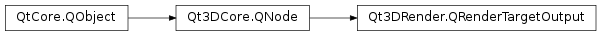

Qt3DRender.QRenderTargetOutput¶
Synopsis¶
Slots¶
- def
setAttachmentPoint(attachmentPoint) - def
setFace(face) - def
setLayer(layer) - def
setMipLevel(level) - def
setTexture(texture)
Signals¶
- def
attachmentPointChanged(attachmentPoint) - def
faceChanged(face) - def
layerChanged(layer) - def
mipLevelChanged(mipLevel) - def
textureChanged(texture)
Detailed Description¶
The
QRenderTargetOutputclass allows the specification of an attachment of a render target (whether it is a color texture, a depth texture, etc… ).A
QRenderTargetOutputspecifies the attachment point and parameters for texture that is attached to render target. In addition to the attachment point, texture miplevel, layer and cubemap face can be specified. The texture attached to theQRenderTargetOutputmust be compatible with the given parameters.
-
class
PySide2.Qt3DRender.Qt3DRender.QRenderTargetOutput([parent=nullptr])¶ Parameters: parent – PySide2.Qt3DCore.Qt3DCore::QNodeThe constructor creates a new
QRenderTargetOutput.QRenderTargetOutputinstance with the specifiedparent.
-
PySide2.Qt3DRender.Qt3DRender.QRenderTargetOutput.AttachmentPoint¶ This enumeration specifies the values for the attachment point.
Constant Description Qt3DRender.QRenderTargetOutput.Color0 Color attachment point at index 0 Qt3DRender.QRenderTargetOutput.Color1 Color attachment point at index 1 Qt3DRender.QRenderTargetOutput.Color2 Color attachment point at index 2 Qt3DRender.QRenderTargetOutput.Color3 Color attachment point at index 3 Qt3DRender.QRenderTargetOutput.Color4 Color attachment point at index 4 Qt3DRender.QRenderTargetOutput.Color5 Color attachment point at index 5 Qt3DRender.QRenderTargetOutput.Color6 Color attachment point at index 6 Qt3DRender.QRenderTargetOutput.Color7 Color attachment point at index 7 Qt3DRender.QRenderTargetOutput.Color8 Color attachment point at index 8 Qt3DRender.QRenderTargetOutput.Color9 Color attachment point at index 9 Qt3DRender.QRenderTargetOutput.Color10 Color attachment point at index 10 Qt3DRender.QRenderTargetOutput.Color11 Color attachment point at index 11 Qt3DRender.QRenderTargetOutput.Color12 Color attachment point at index 12 Qt3DRender.QRenderTargetOutput.Color13 Color attachment point at index 13 Qt3DRender.QRenderTargetOutput.Color14 Color attachment point at index 14 Qt3DRender.QRenderTargetOutput.Color15 Color attachment point at index 15 Qt3DRender.QRenderTargetOutput.Depth Depth attachment point Qt3DRender.QRenderTargetOutput.Stencil Stencil attachment point Qt3DRender.QRenderTargetOutput.DepthStencil attachment point
-
PySide2.Qt3DRender.Qt3DRender.QRenderTargetOutput.attachmentPoint()¶ Return type: PySide2.Qt3DRender.Qt3DRender::QRenderTargetOutput.AttachmentPointSee also
PySide2.Qt3DRender.Qt3DRender::QRenderTargetOutput.setAttachmentPoint()
-
PySide2.Qt3DRender.Qt3DRender.QRenderTargetOutput.attachmentPointChanged(attachmentPoint)¶ Parameters: attachmentPoint – PySide2.Qt3DRender.Qt3DRender::QRenderTargetOutput.AttachmentPoint
-
PySide2.Qt3DRender.Qt3DRender.QRenderTargetOutput.face()¶ Return type: PySide2.Qt3DRender.Qt3DRender::QAbstractTexture.CubeMapFaceSee also
PySide2.Qt3DRender.Qt3DRender::QRenderTargetOutput.setFace()
-
PySide2.Qt3DRender.Qt3DRender.QRenderTargetOutput.faceChanged(face)¶ Parameters: face – PySide2.Qt3DRender.Qt3DRender::QAbstractTexture.CubeMapFace
-
PySide2.Qt3DRender.Qt3DRender.QRenderTargetOutput.layer()¶ Return type: PySide2.QtCore.intSee also
PySide2.Qt3DRender.Qt3DRender::QRenderTargetOutput.setLayer()
-
PySide2.Qt3DRender.Qt3DRender.QRenderTargetOutput.layerChanged(layer)¶ Parameters: layer – PySide2.QtCore.int
-
PySide2.Qt3DRender.Qt3DRender.QRenderTargetOutput.mipLevel()¶ Return type: PySide2.QtCore.intSee also
PySide2.Qt3DRender.Qt3DRender::QRenderTargetOutput.setMipLevel()
-
PySide2.Qt3DRender.Qt3DRender.QRenderTargetOutput.mipLevelChanged(mipLevel)¶ Parameters: mipLevel – PySide2.QtCore.int
-
PySide2.Qt3DRender.Qt3DRender.QRenderTargetOutput.setAttachmentPoint(attachmentPoint)¶ Parameters: attachmentPoint – PySide2.Qt3DRender.Qt3DRender::QRenderTargetOutput.AttachmentPointSee also
PySide2.Qt3DRender.Qt3DRender::QRenderTargetOutput.attachmentPoint()
-
PySide2.Qt3DRender.Qt3DRender.QRenderTargetOutput.setFace(face)¶ Parameters: face – PySide2.Qt3DRender.Qt3DRender::QAbstractTexture.CubeMapFaceSee also
PySide2.Qt3DRender.Qt3DRender::QRenderTargetOutput.face()
-
PySide2.Qt3DRender.Qt3DRender.QRenderTargetOutput.setLayer(layer)¶ Parameters: layer – PySide2.QtCore.intSee also
PySide2.Qt3DRender.Qt3DRender::QRenderTargetOutput.layer()
-
PySide2.Qt3DRender.Qt3DRender.QRenderTargetOutput.setMipLevel(level)¶ Parameters: level – PySide2.QtCore.intSee also
PySide2.Qt3DRender.Qt3DRender::QRenderTargetOutput.mipLevel()
-
PySide2.Qt3DRender.Qt3DRender.QRenderTargetOutput.setTexture(texture)¶ Parameters: texture – PySide2.Qt3DRender.Qt3DRender::QAbstractTextureSee also
PySide2.Qt3DRender.Qt3DRender::QRenderTargetOutput.texture()
-
PySide2.Qt3DRender.Qt3DRender.QRenderTargetOutput.texture()¶ Return type: PySide2.Qt3DRender.Qt3DRender::QAbstractTextureSee also
PySide2.Qt3DRender.Qt3DRender::QRenderTargetOutput.setTexture()
-
PySide2.Qt3DRender.Qt3DRender.QRenderTargetOutput.textureChanged(texture)¶ Parameters: texture – PySide2.Qt3DRender.Qt3DRender::QAbstractTexture
© 2018 The Qt Company Ltd. Documentation contributions included herein are the copyrights of their respective owners. The documentation provided herein is licensed under the terms of the GNU Free Documentation License version 1.3 as published by the Free Software Foundation. Qt and respective logos are trademarks of The Qt Company Ltd. in Finland and/or other countries worldwide. All other trademarks are property of their respective owners.